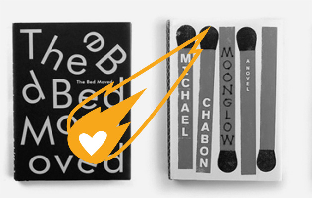
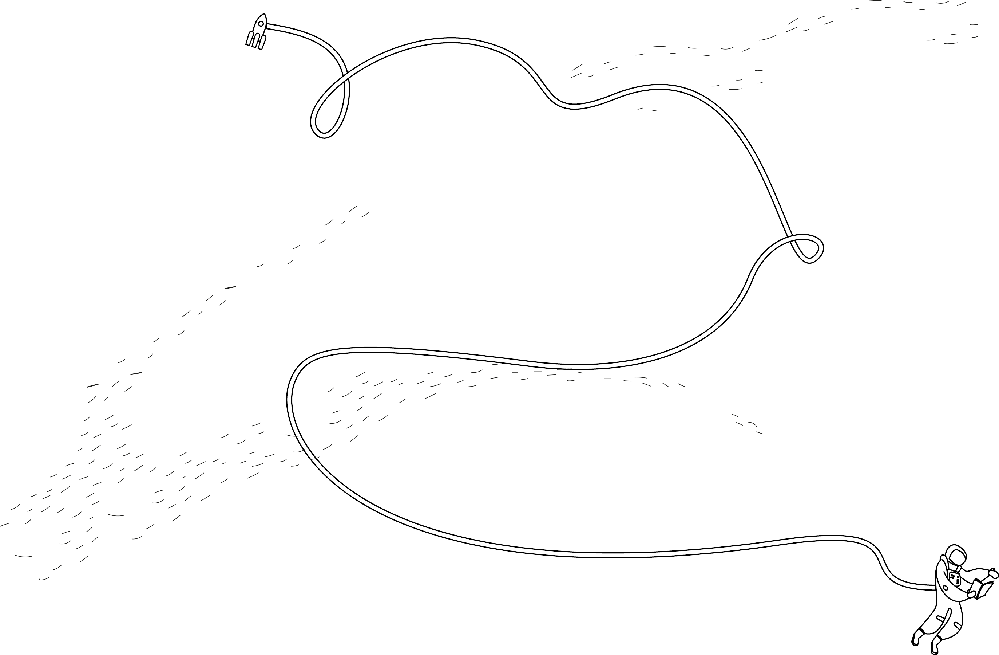

6
Літературних екранізацій
«Читомо» пропонує список літературних екранізацій, про які ви, можливо, ще не чули.
Читати

10
Найкрасивіших книжок версією видання Читомо
«Читомо» пропонує список літературних екранізацій, про які ви, можливо, ще не чули.
Читати
7
Жінок у німецькій поезії
«Читомо» пропонує список літературних екранізацій, про які ви, можливо, ще не чули.
Читати

Тренди